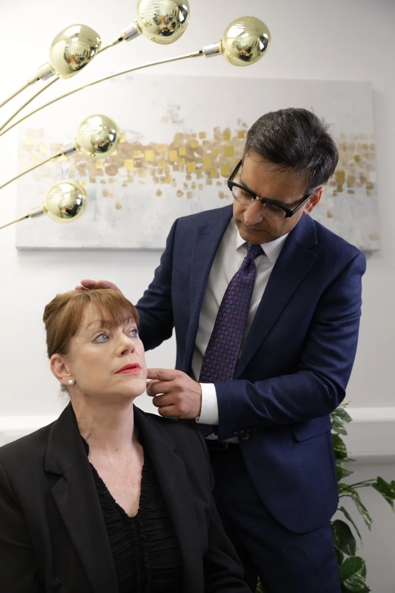
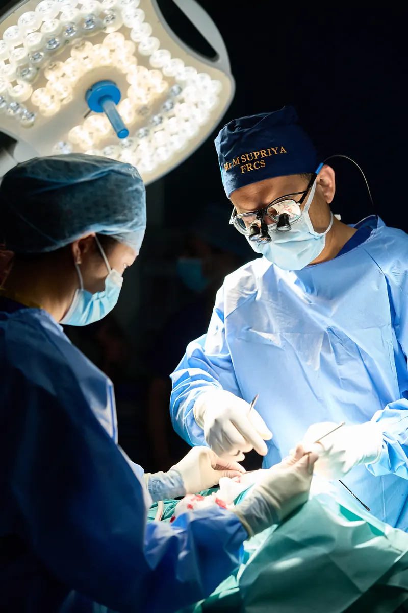
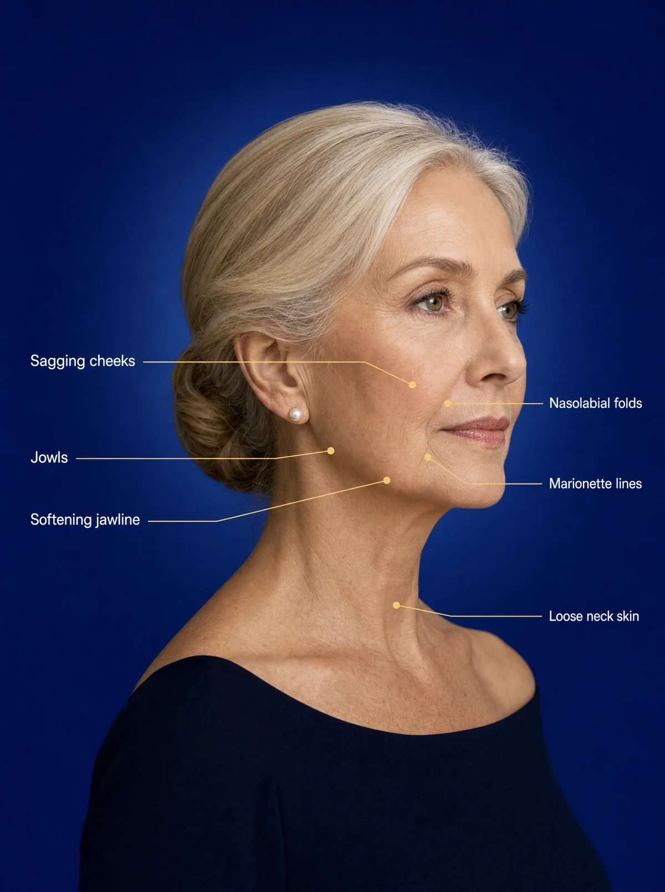
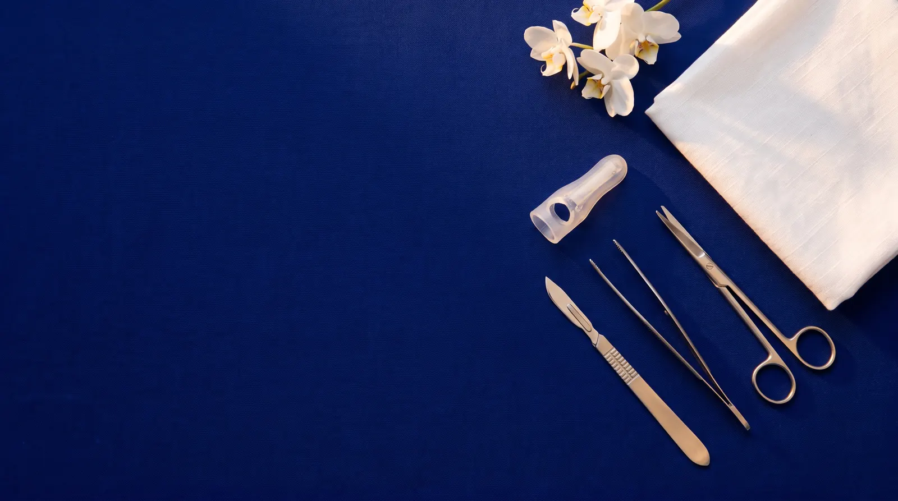
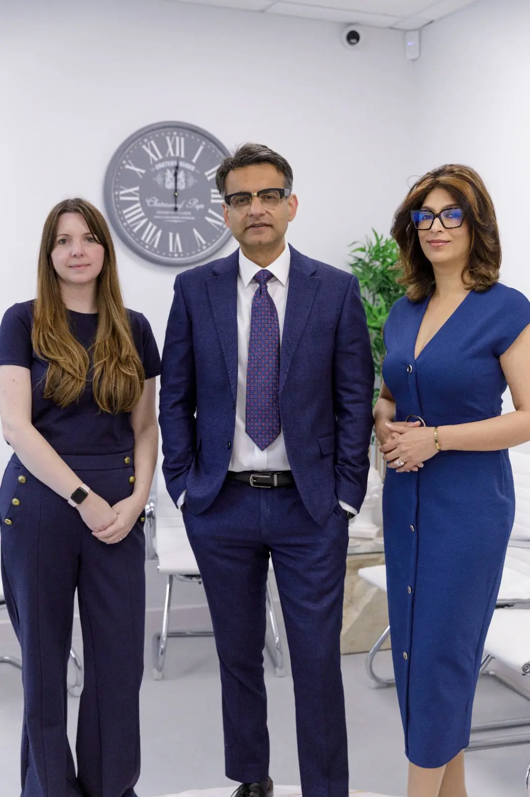
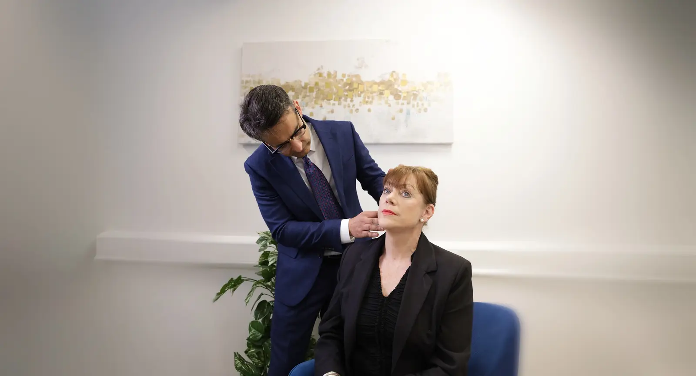

Look as young as you feel
A Deep Plane Facelift restores a naturally lifted, refreshed face, in a single day. Results that look like you, only rested.
- Natural-looking results that last the longest
- Smooth, lifted skin, never the “done” look
- Renewed confidence in every photo and mirror
- Opportunity to speak to a previous deep plane facelift patient
- Consult on Harley Street. Surgery at The Wellington, London, or Athena, Milton Keynes


Book your free discovery call with our patient coordinator
Pick a time that suits you. Holly, our patient coordinator, will call you, answer your questions and, if you'd like, arrange your consultation with Mr Supriya. No cost, no obligation.
Prefer to write to us? Send an enquiry · Or call 07590 817036
Excellent
Based on 45 reviews
-
 Google
GoogleI would like to express my sincere gratitude to Dr Supriya and his entire team for the exceptional care and professionalism I received throughout my surgery journey.
From the very first consultation, I felt listened to, informed, and completely at ease. Dr. Supriya took the time to explain every step of the procedure, answered all my questions patiently, and ensured that my expectations were realistic and well understood.
The surgical team and clinic staff were equally outstanding, kind, attentive, and supportive at every stage. Their warmth and professionalism made what could have been a stressful experience feel comfortable and reassuring.
I am delighted with the results of my surgery. The outcome is natural and elegant and has exceeded my expectations. More importantly, I feel more confident and refreshed while still looking like myself.
I highly recommend Dr Supriya and his team to anyone considering facial rejuvenation surgery. Their expertise, attention to detail, and genuine care for their patients are truly exceptional.
Thank you all for your dedication and for helping me achieve such a wonderful result.
god bless
MJ -
Google
Extremely happy with my recent procedure.
I had a deep plane face and neck lift performed by Mr Supriya at the Milton Keynes clinic in February.
Deciding to go ahead with a major procedure like this is very daunting but after researching then meeting Mr Supriya and his support team I experienced 100% professionalism from the first consultation.
Although smaller than I was expecting , the clinic was a lovely environment , staff friendly and the premises exceptionally clean.
Mr Supriya has a superb bedside manner and took on board the issues that bothered me , we talked everything through thoroughly and I felt immediately at ease.
Nothing was rushed and it was made clear that the door is always open for any questions or concerns I may have forgotten to ask on the day.
I have been very well looked after by the team and am absolutely delighted with the result although it is still early days with my recovery. The after care has also been 100%. Mr Supriya is an outstanding surgeon and I highly recommend the Face Clinic where I was looked after with care and respect. -
Google
Dr Supriya- I’m not sure where to start to Thank you! from my first phone call with Holly, I felt completely at ease and really reassured I was in safe hands. I was recommended Dr Supriya from another clinic and in my first consultation decided to book in because I felt so comfortable and felt Dr Supriya was very knowledgable and highly skilled in his area. I had a septorhinoplasty in December and I am COMPLETELY in love with my new nose and the fact that I can breathe SO much better now. Dr Supriya and Holly took the time to answer all of my questions at any point they were always at the end of a phone call or email (with swift responses). They were very tentative with my care and after care post op with regular phone calls and check ins. Nothing was too much and no question was too silly (albeit some of mine definitely were). Dr Supriya’s team is amazing at Athena- the theatre team, all the nurses and all staff were so friendly and such a laugh and took really good care of me. I thank them all for making this such a wonderful and easy experience for me. I would recommend Dr Supriya and his team WHOLE HEARTEDLY 100 times over to everyone. Thankyou!!
-
Google
I had a septorinoplasty with Mr Supriya and am grateful for the skillful and attentive care he and his team gave me. Both appearance and breathing were improved, and I received excellent help and support along with way. The office staff were also wonderful, especially Holly and Louiselu. Many thanks to everyone!
-
Google
I recently had a septoplasty with Dr. Supriya and it went exceptionally well thanks to his admirable skills, communication, pre and post-op care. I finally understand what it feels to breathe normally through my nose and it’s helped my quality of life significantly. Huge thanks to his team as well for being so supportive and making this a seamless process, it’s been a pleasure!
-
Google
Honestly if you are thinking of using the British Face Clinic don’t hesitate. I had Blepharoplasty surgery and I really wish I had had it done sooner a fantastic job. Mr Supriya and his team were fantastic. From my initial call when I spoke to Holly, who was absolutely lovely, very reassuring and most informative, as well as the Nurses and Receptionist, everyone was extremely nice. Mr Supriya I am so pleased with the results a huge Thank You to all involved.
-
Google
I recently had facial cosmetic surgery with Dr Supriya at British Face Clinic and couldn't be happier with my results.. so far so good and I am so excited to see the final result in a couple of months time as I still have to under go one more treatment to finalise the overall look. When I went to see Dr Supriya I also had some problem within my chin area...this is because of my previous treatment with a different clinic and Dr Supriya has given me confidence that he will also be able to correct this area for me. From the very first consultation to post-operative care....Dr Supriya and his team have provided excellent care. Dr Supriya has explained every step of the treatment to me very clearly, he was informative and very professional and listened to my concerns. Holly who is the clinic manager is so helpful and friendly and answered all of my questions very quickly and efficiently. Athena surgical team were very caring and they have been looking after me very well. I am so glad that I have chosen Dr Supriya to be my surgeon and have absolutely no hesitation in recommending him to anyone who is thinking of under going cosmetic treatments. I am so thankful to Dr Supriya and his team for all the care.
-
Google
Great experience and outcome from Mr Supriya with my Rhinoplasty. Functional straight nose, with a new smaller shape that i am confident with. Great communication before and after the operation, I would recommend! Mikey
-
Google
After many years of being very very apprehensive, and after receiving a bad experience at Harley Medical Centre, it took me nearly two years to finally summon up the courage to have a deep plane facelift.
From day 1 this team led by what I consider to be one of the finest surgeons in the World in Mr Supriya, put me at ease.
Their kindness, their patience and dedication and ultimately the skill of Mr Supriya was beyond excellent.
As they are an independent company and not affiliated to a main body , they resemble something of a family.
I strongly recommend that anyone thinking about this or any other procedure to have a consultation with these people first .
You will not be disappointed.
My deepest thanks to everyone that looked after me there X. -
Google
After learning of Mr Supriya's great reputation, I booked a consultation in his London clinic. The first person I spoke with over the phone was Holly, who answered my numerous questions and thoroughly explained the various options and procedures suited to my needs. Mr Supriya was professional and informative. Before surgery, I was able to call Holly with any further questions and I even had a second consultation with the surgeon. Athena Surgical's staff were caring and the medical team in the operating theatre were so efficient that I felt very safe. Special thanks to Holly, Louise and Liz (in theatre) for looking after me. I'm thrilled with my choice of surgeon and the high standard of care I received.
Helping real people take years off their faces
Authentic, unedited before & after photographs of Mr Supriya’s patients. Over 500 satisfied patients. Over 500 real results.


Still catching signs of ageing every time you look in the mirror?
Sagging skin, deep lines and jowls don’t just change how you look, they change how you feel about yourself. You skip the photos. You avoid the gatherings. The face in the mirror stopped matching the person inside it.
You don’t have to accept it. A naturally youthful, lifted appearance is closer than you think, and it begins with one phone call.

Reveal the real you, in a single day
Performed by leading facial surgeon Mr Mrinal Supriya, the Deep Plane technique lifts the deeper layers of the face as one unit, restoring definition to the cheeks, jawline and neck with results that look natural, not “done.”
- 01
Completely natural
Tension-free repositioning means a refreshed face, never a pulled or operated look.
- 02
Lasts far longer
Releasing the deep ligaments delivers results that outlast a traditional facelift by years.
- 03
Faster recovery
A targeted technique means less swelling, less bruising and a gentler, quicker healing.
- 04
Restored confidence
Smooths jowls, neck bands and deep folds, so you feel like yourself again.

- 5.0
- Google rating
- 500+
- Satisfied patients
- Top 30
- RCS-certified UK surgeons
Your journey, in three steps
- 01
Free phone consultation
A friendly, no-obligation call with our specialist team to understand your goals and answer your questions.
- 02
Meet Mr Supriya
International experience across top hospitals in the UK, Australia and the USA.
- 03
Procedure & aftercare
Leads advanced surgical services at a prominent NHS hospital.
How deep plane differs from a regular facelift
A traditional facelift
Skin and the underlying SMAS layer are lifted separately, then tightened with sutures, which can give shorter-lasting, less natural results.
The deep plane technique
Skin and muscle are released and repositioned as a single unit, freeing the deep anchoring ligaments. The result is a more natural, far longer-lasting rejuvenation.

One fixed fee, everything covered
No hidden costs, no separate invoices and no surprises after surgery. Every deep plane facelift is performed by Mr Supriya himself.
With or without fat grafting and liposuction
A fixed, all-inclusive fee covering your surgeon, anaesthetist, hospital stay and every follow-up appointment.
Book a Free Discovery CallWith neck lift, platysmaplasty and fat grafting
Comprehensive rejuvenation of the face, jawline and neck in a single procedure, with one fixed, all-inclusive fee.
Enquire about this optionDeductible from your surgery when you go ahead, with follow-up consultations included.
- Fast approval
- No hidden fees
- Response in minutes
Surgeon’s fee
Your surgery and all post-operative follow-up appointments. In the unlikely event of an emergency or complication, further surgical care is included too.
Anaesthetist’s fee
A consultant-led anaesthetic team, included in your total package price.
Theatre & hospital stay
Your private hospital stay and the medication you take home on discharge.
Aftercare
Up to 18 months of follow-up care, unlimited appointments and a TCA skin peel when needed.

Your face, in the safest hands
Every case is performed exclusively by Mr Mrinal Supriya, one of only 30 surgeons in the UK certified by the Royal College of Surgeons in facial cosmetic surgery, and Divisional Director of Surgery at University Hospitals of Northamptonshire.
- A true composite deep plane technique
- International training, including with Dr Andrew Jacono in New York
- Focused entirely on the face, for the best possible outcome
- An exceptionally low revision rate and high patient satisfaction
- Unlimited access to a dedicated team member, before and after surgery
Why choose British Face Clinic?
Most clinics offering a facelift don’t carry out true deep plane surgery. The majority perform skin tightening or SMAS tightening, techniques that can give shorter-lasting, less natural results. Only a handful of surgeons in the UK offer a true composite deep plane facelift, deep plane mini facelift and neck lift with the extended approach needed to divide the anchor ligaments, the step that’s crucial for the longest-lasting, most natural results.

More reasons to choose Mr Supriya for your deep plane facelift:
- 01
A focus on natural-looking outcomes, delivering high patient satisfaction with minimal revision rates.
- 02
International experience across top hospitals in the UK, Australia and the USA.
- 03
Leads advanced surgical services at a prominent NHS hospital.
- 04
Teaches and trains Oxford Deanery trainee surgeons, ensuring top-level expertise.
- 05
Trained alongside Dr Andrew Jacono, one of the top facelift surgeons in the USA.
- 06
An exceptionally low revision rate, reflecting the quality of every procedure.
- 07
The best possible support before, during and after surgery, with unlimited access to a nominated team member.
Your questions, answered

Is a Deep Plane Facelift suitable for all age groups?
A Deep Plane Facelift is typically recommended for individuals in their 40s to 60s who have moderate to significant sagging in the mid-face, jowls, or neck. While age is a factor, the suitability of this procedure depends more on an individual’s overall health, skin condition, and specific aesthetic goals.
Are there any specific risks associated with the Deep Plane Facelift?
As with any surgical procedure, a Deep Plane Facelift carries some risks. These may include infection, bleeding, nerve injury, and reactions to anaesthesia. However, when performed by an experienced surgeon like Mr Mrinal Supriya, the risks are minimised, and complications are rare.
How long do the results of a Deep Plane Facelift typically last?
The results of a Deep Plane Facelift are long-lasting, often providing a rejuvenated appearance for several years. The longevity of the results can be influenced by factors such as skin type, lifestyle, and ageing processes.
What are the most common signs indicating that someone might be a good candidate?
Good candidates for a Deep Plane Facelift typically show signs of ageing such as sagging skin in the mid-face, pronounced nasolabial folds, jowls, and loose neck skin. Candidates should be in good health, non-smokers, and have realistic expectations about the outcomes.
Can a Deep Plane Facelift be combined with other procedures?
Most patients will choose comprehensive face and neck rejuvenation that includes forehead lift, eyelid surgery, facelift, neck lift and lip lift in a single session. If appropriate, this gives the best outcome and minimises repeated recovery downtime needed if the surgeries are done in stages.
What type of anaesthesia is used during a Deep Plane Facelift?
A Deep Plane Facelift is usually performed under general anaesthesia or deep sedation. This ensures that the patient is comfortable and pain-free throughout the procedure.
How can I expect my facial movement and expressions to be after the surgery?
After a Deep Plane Facelift, most patients retain normal facial movement and expressions. The technique focuses on repositioning deeper tissues, which helps maintain a natural look and allows for more natural expressions.
Will a Deep Plane Facelift address issues in the neck area?
Yes, a Deep Plane Facelift can effectively address sagging and laxity in the neck area. For more pronounced issues in the neck, additional procedures such as a neck lift can be combined to achieve optimal results.
How does the surgeon minimise scarring with a Deep Plane Facelift?
Incisions for a Deep Plane Facelift are strategically placed along the hairline and around the ears to minimise visible scarring. The incisions are meticulously closed with fine sutures, and post-operative care instructions are provided to promote optimal healing and reduce scarring.
Toward a more confident you
Book your free, no-obligation phone consultation. We’ll listen, answer your questions and help you decide if a Deep Plane Facelift is right for you.
- Free initial phone consultation
- No obligation, just a friendly conversation
- Speak to a specialist, not a call centre
Prefer to call? 07590 817036
Request your free call
We’ll be in touch within one working day.
No payment required · Your details are kept private and never shared.